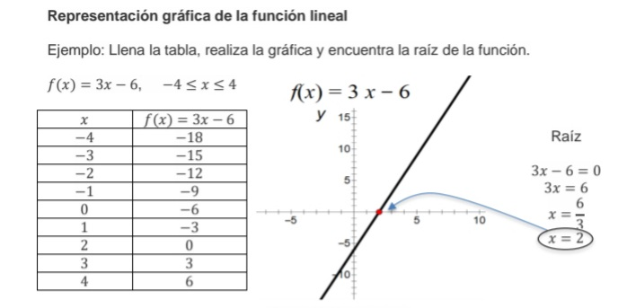
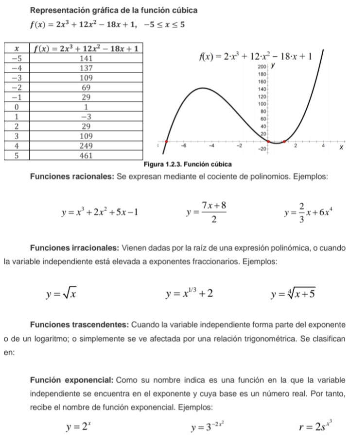

Lo primero que hay que saber son las Funciones.
Dejaremos algunos ejemplos de ejercicios de calculo:
Las funciones son las relaciones entre elementos de un conjunto A y uno B, tal que a cada elemento A le corresponda un unico elemento de B.


Ahora veremos utro tema.
La Clasificacion.
La Clasificacion.

Operaciones necesarias para resolverla:
